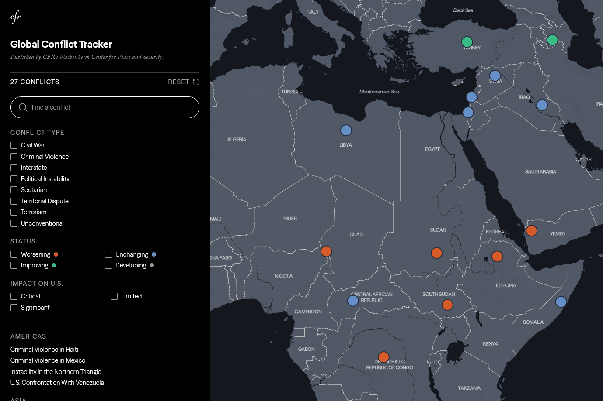
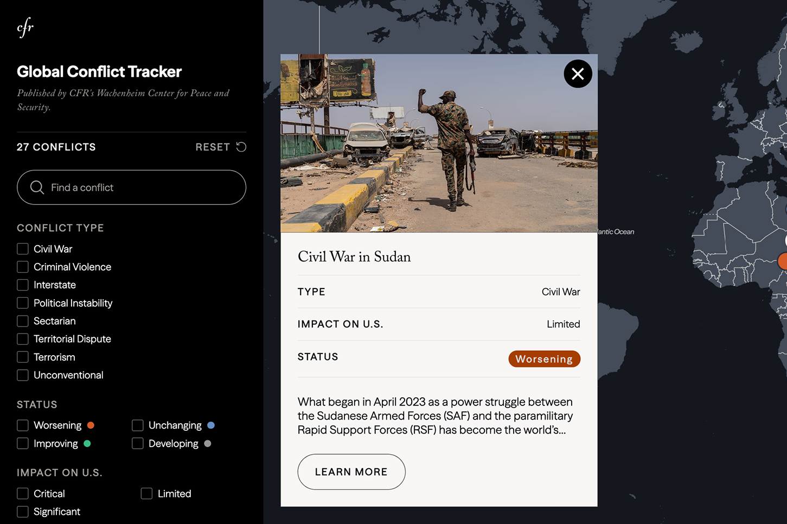
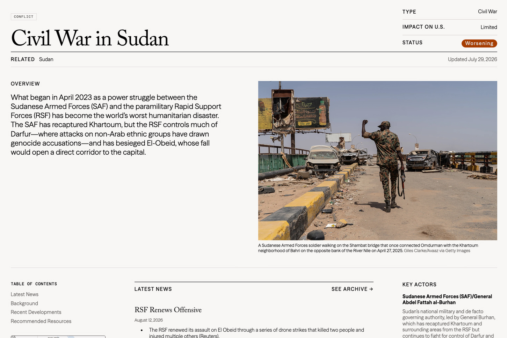
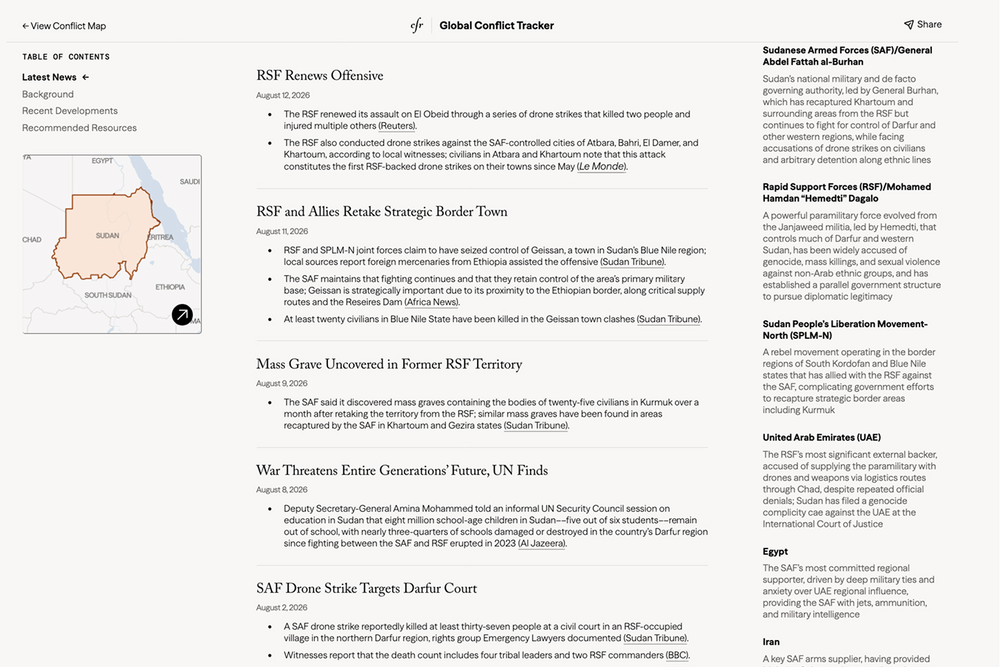
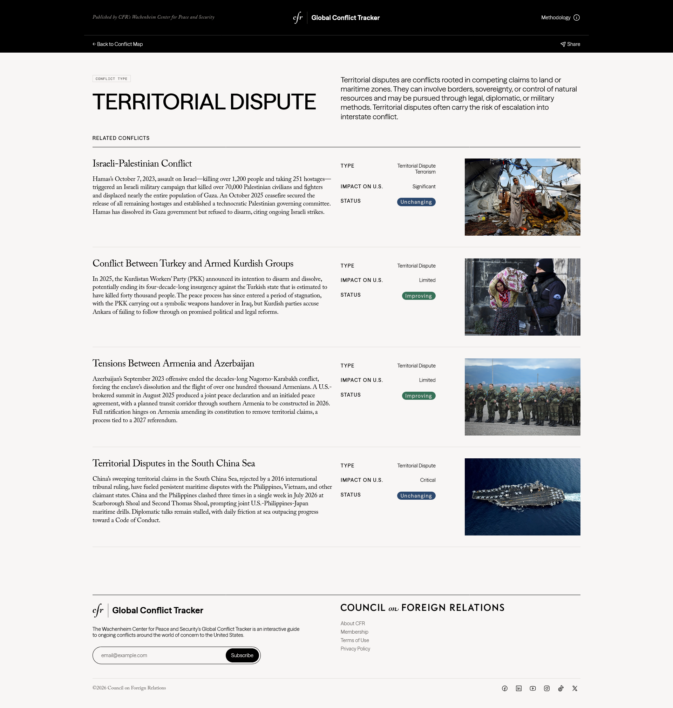
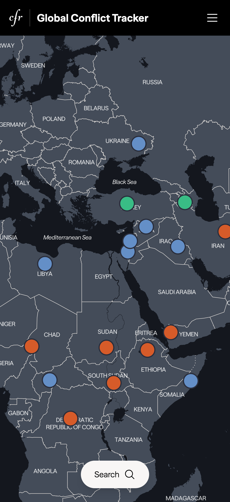
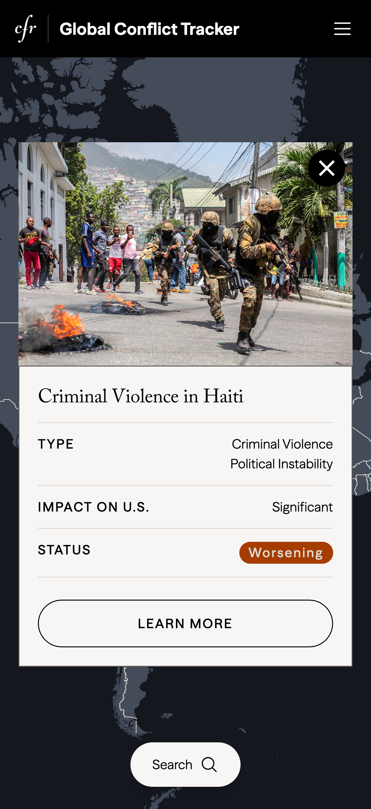
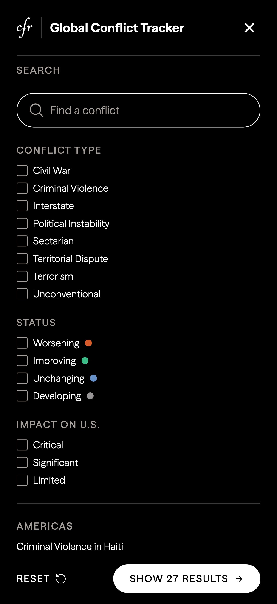
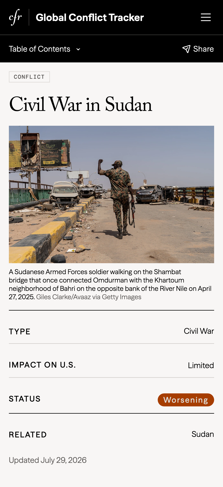
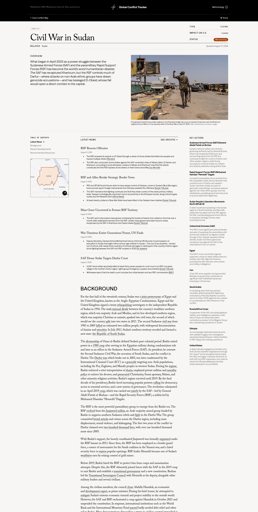

Global Conflict Tracker
Product Overview
The Global Conflict Tracker (GCT) is an interactive tool from CFR that explains the history, drivers, and latest developments of ongoing global conflicts. Ahead of the redesign, our team ran a mixed-methods research study to understand who uses GCT, what they need, and where the current experience falls short.
View the live site here!
I lead a mixed-methods research study on CFR’s Global Conflict Tracker to understand who uses it, what they need, and where the current experience falls short.
Following our rebranding, I ensured our styles and followed our new standard and created
- Site-intercept survey with 13,727 responses over 2 weeks
- Focus groups with students from Hunter College to learn how they consume the news
- Usability testing with 10 first-time users
- Users go through multiple sources and lack historical/global context for conflicts
- Search, filter, and Latest News were hard to find on desktop and mobile
- Showcased more conflict data directly on the homepage
- Redesigned conflict pages with more visuals
- Made search/filter more prominent
- Highlighted Latest News section on desktop and mobile
- Ensured redesign also followed our new branding standards
Final Designs









Dive Deeper
Research
Our goal was to assess who's using GCT, and for what purpose. Were users able to find what they needed? Focus on if the language used in GCT (conflict "types," "status," "impact on U.S.") actually meant anything to users.
Site-intercept survey
Who is utilizing our website? Were they able to find what they were looking for?
Ran 2 weeks (Mar 17–31), Survey was shown to 100% of visitors, all devices, and was triggered after 15 seconds or when users scrolled 20% of the page.
Received 13,727 responses.
Focus groups
How do people actually think about “conflict”?
2 groups of students (5 or 6 students per group) from Hunter College, ages 18–24, enrolled in political science or international affairs courses.
Usability testing
Can users complete tasks?
10 first-time GCT users (5 desktop, 5 mobile), ages 21–23, via UserTesting.com. 11 tasks, 7–16 minutes each, covering the homepage map/search/filter and individual conflict pages.
Key Findings
- Students (52%) and those 24 and under are the primary user group.
- Most visitors (72%) were first-timers. Audience skewed towards U.S.-based and English speaking.
- Most visitors come to do research, but “general interest” and “just browsing” together rival research-driven visits.
- Traffic is driven by the news cycle: top pages tracked breaking events (Yemen/Red Sea, Israeli-Palestinian conflict, Ukraine, Sudan, Myanmar); top search terms were “war,” “conflict,” country names.
- Experience was largely positive: 82% found what they were looking for, and most rated ease of use 4/5 out of 5.
- Users utilize multiple news outlets to gather information. More “reliable” outlets include NYT, AssociatedPress, WashingtonPost, Al Jazeera. Social media such as TikTok and Instagram were mainly used for opinions or awareness. Newsletters and breaking news/alerts (such as app notifications) were also used.
- What drew the group’s attention to a conflict: violence, injustice, human rights, and U.S. involvement.
- Conflicts feel personally distant; the biggest barrier to engagement is a lack of historical and global context, not lack of interest.
- Israel-Palestine and Russia-Ukraine dominate awareness; other major conflicts, such as conflicts in Asia were not much of an area of focus.
- Every participant interacted with the homepage map. 8/10 used it first to find information.
- On mobile, 4/5 users tapped a map pin expecting to reveal full conflict details, it didn’t. This showcases a mismatch in user expectations.
- Search and filter tools were hard to find on mobile and desktop. Clearing filters was confusing, and related territories didn’t appear in search results. For example, if users searched for “Russia,” the conflict with Ukraine would not appear.
- On conflict pages, 4/5 mobile users missed the “Latest News” module entirely and scrolled past it to “Recent Developments” instead. The module was missed altogether on desktop.
- Users wanted dates and years to stand out and asked for more images, video, and interactive graphics. We found this paralleled with how they consume news via social media.
From Findings to Design
| Finding | Design response |
|---|---|
| Browsing/general interest visits are almost as common as targeted research | Surface more conflict data directly on the homepage, rather than adding a click barrier |
| Users want more visuals, similar to how they consume media | Redesign conflict pages with more images, video, timelines, and interactive graphics. Break long text into more digestible sections |
| Search/filter were hard to find and buggy | Make search and filter more prominent; rethink filtering logic. Showcase conflicts with related keywords |
| Latest News was missed on mobile and hidden on desktop | Guarantee the Latest News module is visiblee |
| Users lack historical/global context, and conflicts are often interconnected | Add macro-level trend context and clearer visual links between related conflicts |
Outcome & What’s Next
Following the research phase, the team moved into the next phases of the redesign. With our findings, we worked on designs that we believe would help users navigate GCT.
A follow-up site survey run just before launch (June 2026, pre-redesign) showed the user base continuing to shift in ways that reinforced the original findings.
46.8% → 32.3%
Research-driven visits fell further, while general-interest and browsing visits grew — validating the “put more on the homepage for browsers” recommendation.
57.4% → 42.6%
The student share of the audience dropped as “other” professions grew — a signal for the redesign to serve a broadening, less specialist audience.
83.6% → 78.5%
Satisfaction slipped, driven mainly by repeat users with more specific needs — underscoring the urgency of the search/filter and content fixes.
Status
We have just launched the Global Conflict Tracker as of August 2, 2026 which you can view here. We are continuing to reiterate the design and build, and will hopefully be able to provide more data soon! :)
